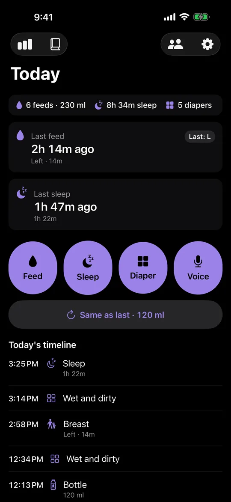
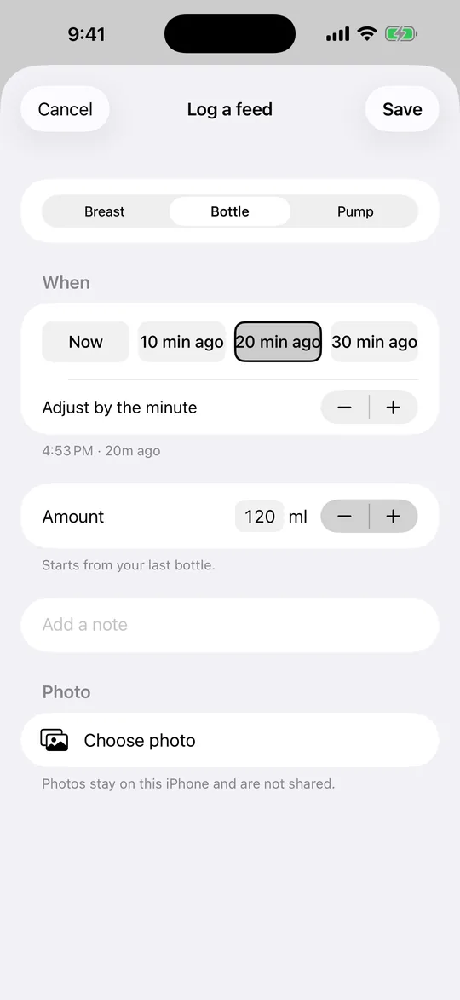
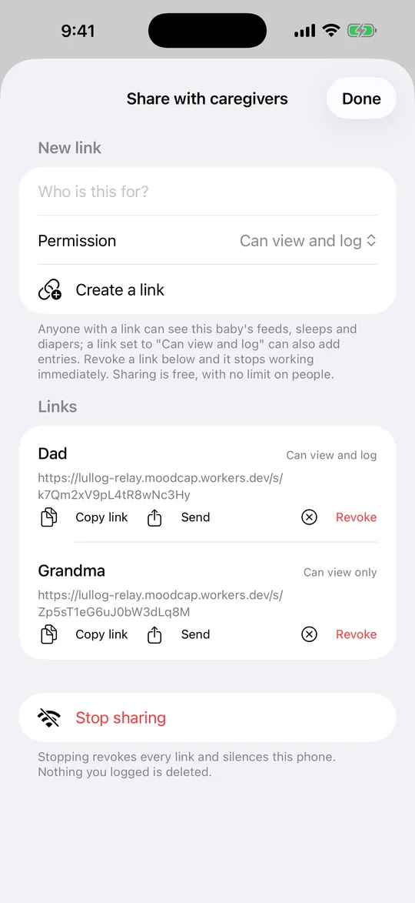
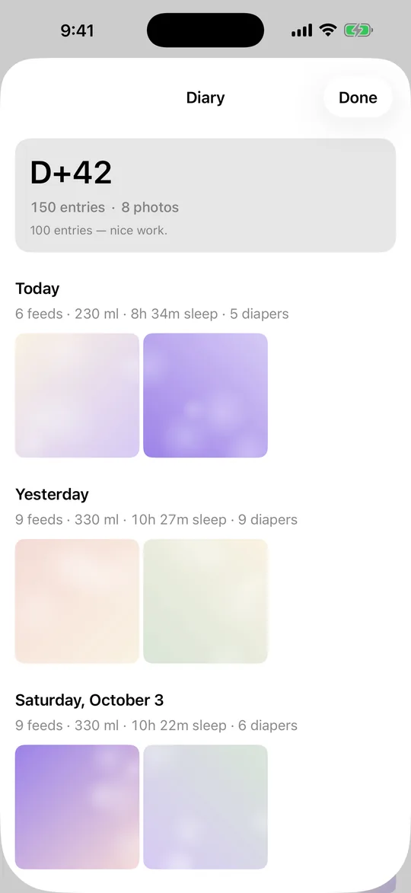
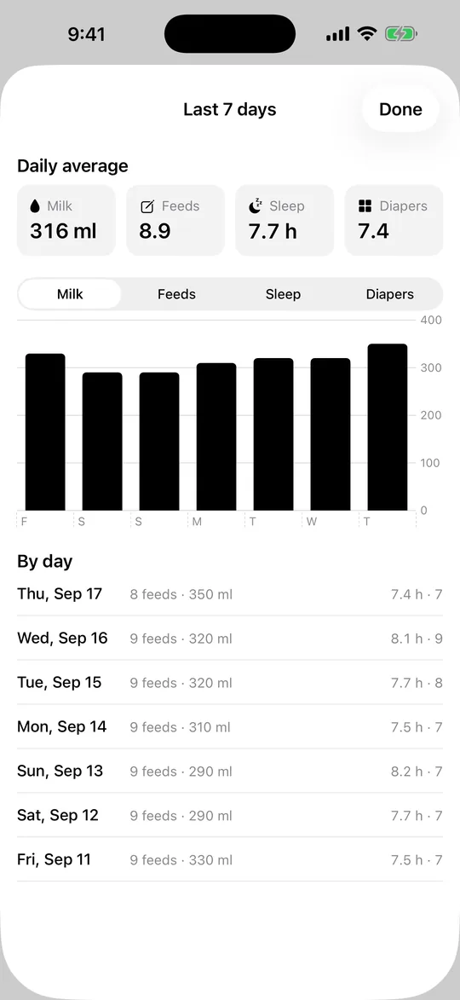
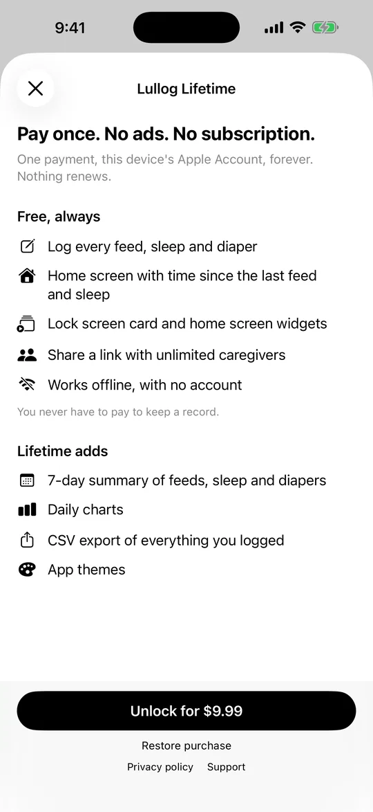

The baby feeding log built for the 3 AM feed
Log from the lock screen, by voice, or in two taps, without opening the app. Your partner, a grandparent or a sitter opens one link in any browser and logs alongside you.
Free to log · iPhone · iOS 17 or later
- Works offline
- No ads
- No account
- Log without opening the app

Without opening the app
Log without opening the app
Interactive widgets on the lock screen and home screen have one-tap buttons: start a feed timer, log a bottle like last time, log a diaper, start a sleep timer.
Say "Log a bottle in Lullog" to Siri, or put the shortcut on the Action Button. On iOS 18 you can add Lullog buttons to Control Center.
These buttons, Siri and voice logging are free in the latest version of Lullog. Widgets and the Live Activity also count up from the last feed and the last sleep. Lullog shows the time that has passed; it does not predict the next feed.
Voice
Say it instead of typing it
Tap the mic and say "bottle 120" or "wet diaper". Lullog saves the entry and shows an Undo button.
Speech is recognised on your iPhone only and nothing leaves the phone. Voice works in English, Korean, Japanese, Chinese, Spanish, German, French, Portuguese and Italian. Where on-device recognition is not available, the mic button is hidden.
Logging
Two taps, even if you forgot to log it
Tap Feed, choose breast, bottle or pump, and save. Fell asleep before you logged it? Pick "10 min ago", "20 min ago" or "30 min ago" instead of scrolling a time wheel.
Same bottle again? "Same as last · 120 ml" on the Today screen logs it in one tap.
You can add a photo to a feed or diaper entry. Photos stay on this iPhone and are never synced or shared. For five seconds after any save, an Undo button takes it back.

Lock screen
Stop the timer without unlocking your phone
When a sleep or breast-feed timer is running, it shows in the Live Activity on the lock screen with a Stop button. Tap Stop and the entry is saved, without Face ID or a passcode and without putting the baby down.
The lock screen timer is free, like all logging.
Sharing
One link for everyone who helps
Send a link to your partner, a grandparent or a sitter. They open it in any browser to see the log and, if you allow it, add entries. No app, no account, no fee per person.
Each person gets their own link, set to view and log or view only. Revoke a link any time and it stops working.
Sharing is off until you tap Connect to sync. Until then Lullog makes no network requests and your log stays on your iPhone.

Diary
Your log, day by day
The Diary shows each day's totals with the photos you added, under a D+N count of days since birth and the number of entries and photos so far.
There are no streaks and nothing to keep up. The Diary is free.

Lullog Lifetime
The last 7 days on one screen
Daily averages for feed amount, number of feeds, sleep hours and diapers, with a bar chart and a day-by-day list.
The 7-day summary, daily charts and CSV export are part of Lullog Lifetime, a one-time purchase.

Pricing
Pay once. No subscription.
Everything you need to log and share is free, with no ads and no limit on caregivers. If you want the weekly view, Lullog Lifetime unlocks it with a single payment.

Free
Free
- Feed, sleep and diaper logging
- Today screen and timeline
- Home screen widgets
- Lock screen Live Activity
- Lock screen timer with Stop
- Widgets, Siri and Control Center logging
- Voice logging (on-device)
- Photos and Diary
- Link sharing with unlimited caregivers
- No ads
Lullog Lifetime
Pay once one-time purchase · price shown in the App Store
No subscription. The App Store shows the price for your country before you buy.
- Everything in Free
- 7-day summary
- Daily charts
- CSV export
Free web tools
These open in any browser and need no app or account.
- Baby tracker pricing: subscription or one-time purchase
How the common pricing models differ and what to check before you pay.
- Newborn feeding and sleep guides (Korean)
Feeding intervals, amounts by month, sleep windows and diaper counts.
- Feeding interval calculator (Korean)
Estimate daily amount and spacing from your baby's weight and age.
Get Lullog for iPhone
Free to download and log. Pay once only if you want the weekly view.
Lullog is a log, not medical advice. If you are worried about feeding or sleep, talk to your pediatrician.